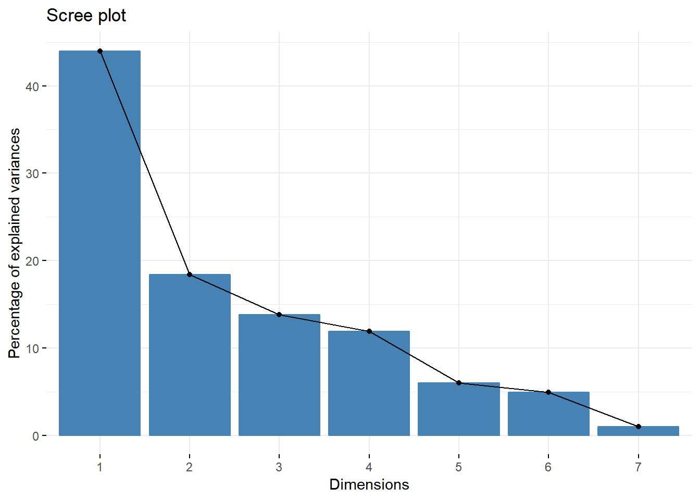
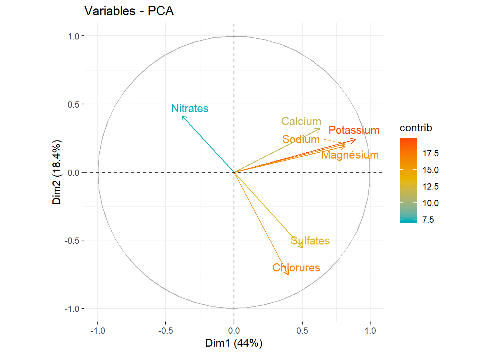
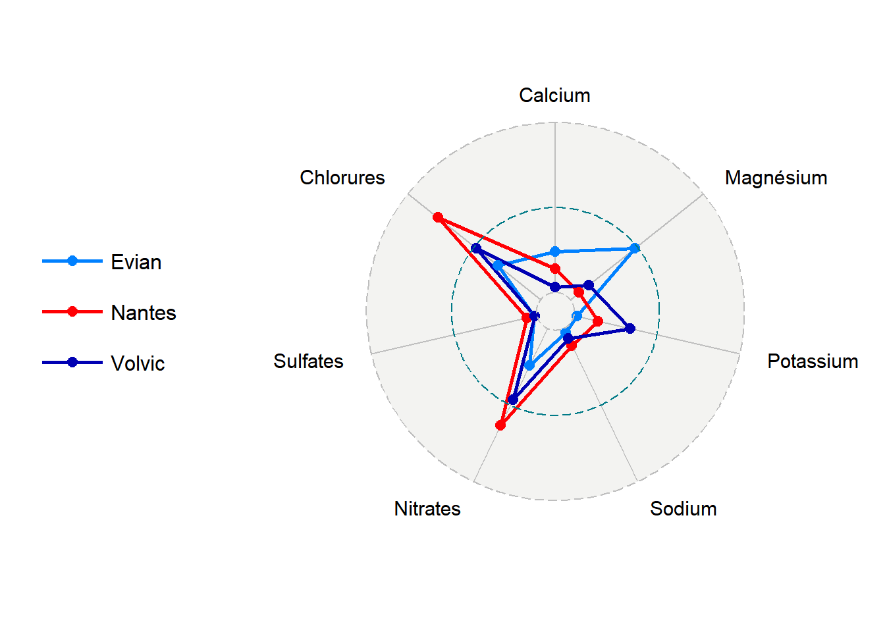
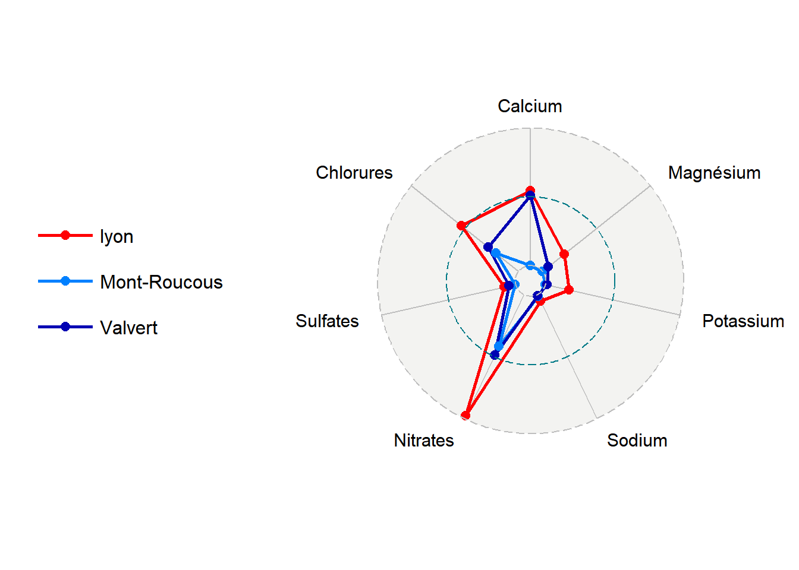
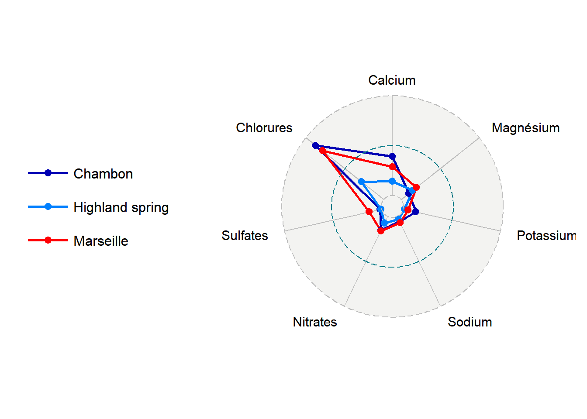
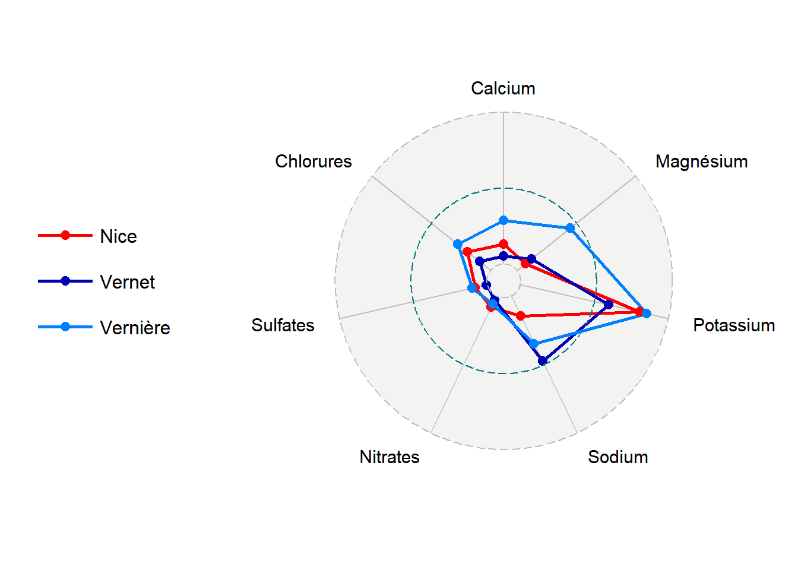

Avec la collaboration de Rochd Maliki et de Kader Salissou
Les eaux en bouteille ne sont pas toutes des eaux minérales naturelles. D’une part il y a l’eau de table qui est de même nature que l’eau de robinet mais commercialisées en bouteilles et a éventuellement subi un traitement spécifique, d’autre part l’eau de source qui est une eau d’origine souterraine, ayant bénéficié d’une protection contre la pollution, et n’ayant subi ni traitement chimique, ni adjonction et doit satisfaire les critères de potabilité.
Nombreuses sont les marques d’eau minérale disponibles dans les supermarchés, certaines marques sont même connues dans le monde entier. Est-ce juste un coup de marketing, ou ces eaux sont particulières ?
Pour répondre à cette question nous allons faire une analyse sur la composition minérale des eaux de robinet de quelques villes en France et la comparer avec celle des eaux en bouteille.
Afin de comparer les eaux nous allons prendre leur composition en taux de : Calcium, Nitrates, Sodium, Magnésium, Suldates, Chlorures, et Potassium.
Compte tenu des informations sur les taux des minérales, nous allons faire une réduction de dimension. Ainsi on pourrait visualiser d’une manière plus simple la répartition des eaux. Le graphe ci-dessous montre que nous allons garder 62.4% d’informations sur les deux dimensions: Dim1 : 44% et Dim2 18.4%.

Nous constatons une intersection des eaux de robinet avec les eaux minérales. Cet espace sur lequel nous visualisons les eaux de robinet a été créé uniquement à partir des données des eaux minérales, c’est à dire depuis les taux des minéraux contenus dans chaque eau minérale.
En effet, on essaie de voir où se situent les eaux de robinet dans l’espace des eaux minérales.
On peut diviser notre espace des deux dimensions en 4 régions:
Premier quart de cercle : En haut à droite : les individus sont fortement corrélés avec la variable Calcium, Sodium, Magnésium et Potassium
Deuxième quart de cercle : En bas à droite : les eaux ont une teneur importantes en sulfates et chlorures
Troisième quart de cercle : En bas à gauche : les eaux ont une teneur faible en Calcium, Sodium, Magnésium et Potassium
Quatrième quart de cercle : En haut à gauche : les eaux ont une teneur importantes en Nitrate.

Nous allons voir de plus près la ressemblance entre les eaux du robinet de quelques villes et les eaux minérales :
Pour ce faire, nous avons utilisé la distance euclidienne afin de trouver les deux eaux minérales les plus proche d’une ville donnée.
Nous allons se focaliser sur les eaux qui se trouve dans la zone d’intersection entre les eaux de robinet et les eaux de villes. Notamment, on ne peut pas comparer l’eau de Paris à une eau minérale puisqu’elle est éloignée des autres eaux vu sa teneur importante en Nitrates.
Ci-dessous quelques eaux de robinet similaires aux eaux de minérales.
L’eau du robinet de la ville est en Rouge tandis que les eaux minérales similaires sont en nuances de bleu. C’est à dire, le bleu foncé représente l’eau minérale la plus proche à l’eau du robinet de la ville et le bleu clair est la deuxième eau la plus proche en termes de minéraux listés précedemment.

| Eau | Calcium (mg/100ml) | Magnésium (mg/100ml) | Potassium (mg/100ml) | Sodium (mg/100ml) | Nitrates (mg/100ml) | Sulfates (mg/100ml) | Chlorures (mg/100ml) |
|---|---|---|---|---|---|---|---|
| Nantes | 4.2 | 0.5 | 0.39 | 2.4 | 1 | 4.8 | 2.4 |
| Volvic | 1.05 | 1.02 | 0.869 | 1.45 | 0.73 | 0.9 | 1.5 |
| Evian | 7.07 | 3.53 | 0.08 | 0.66 | 0.38 | 1.4 | 1 |

| Eau | Calcium (mg/100ml) | Magnésium (mg/100ml) | Potassium (mg/100ml) | Sodium (mg/100ml) | Nitrates (mg/100ml) | Sulfates (mg/100ml) | Chlorures (mg/100ml) |
|---|---|---|---|---|---|---|---|
| lyon | 7.25 | 0.675 | 0.225 | 0.6 | 0.7 | 3 | 0.75 |
| Valvert | 6.78 | 0.2 | 0.045 | 0.195 | 0.35 | 1.8 | 0.4 |
| Mont-Roucous | 0.13 | 0.02 | 0.03 | 0.26 | 0.3 | 0.2 | 0.3 |

| Eau | Calcium (mg/100ml) | Magnésium (mg/100ml) | Potassium (mg/100ml) | Sodium (mg/100ml) | Nitrates (mg/100ml) | Sulfates (mg/100ml) | Chlorures (mg/100ml) |
|---|---|---|---|---|---|---|---|
| Marseille | 7 | 1.2 | 0.13 | 1.25 | 0.21 | 8.25 | 2.04 |
| Chambon | 9.47 | 0.61 | 0.3 | 1.03 | 0.2 | 0.93 | 2.26 |
| Highland spring | 3.5 | 0.9 | 0.06 | 0.6 | 0.1 | 0.6 | 0.75 |

| Eau | Calcium (mg/100ml) | Magnésium (mg/100ml) | Potassium (mg/100ml) | Sodium (mg/100ml) | Nitrates (mg/100ml) | Sulfates (mg/100ml) | Chlorures (mg/100ml) |
|---|---|---|---|---|---|---|---|
| Nice | 8.6 | 1.16 | 4.45 | 6.67 | 0.28 | 14.35 | 1.34 |
| Vernet | 3.6 | 1.96 | 3.3 | 21.5 | 0.1 | 1.4 | 0.64 |
| Vernière | 18.5 | 7.22 | 4.72 | 15.8 | 0.2 | 17.4 | 1.9 |
La minéralisation de l’eau traduit la richesse de l’eau en sels minéraux d’origine naturelle. Certes, que nous pouvons affirmer que la composition minérale de l’eau du robinet de certaines villes en France est comparable aux eaux minérales vendues au supermarché, mais cela ne traduit pas qualité de l’eau. En effet, d’autres facteurs entrent en jeu comme l’acidité ou l’alcanité de l’eau, la radioactivité de l’eau ou même le chlore, des chlorites sont formés lors de l’utilisation de chlore pour la désinfection de l’eau potable.
Si vous habitez l’une des villes citées ci-dessus, vous n’avez pas besoin d’acheter les eaux minérales auxquelles son eau est similaire si c’est la composition minérale de ces eaux qui vous importe le plus.